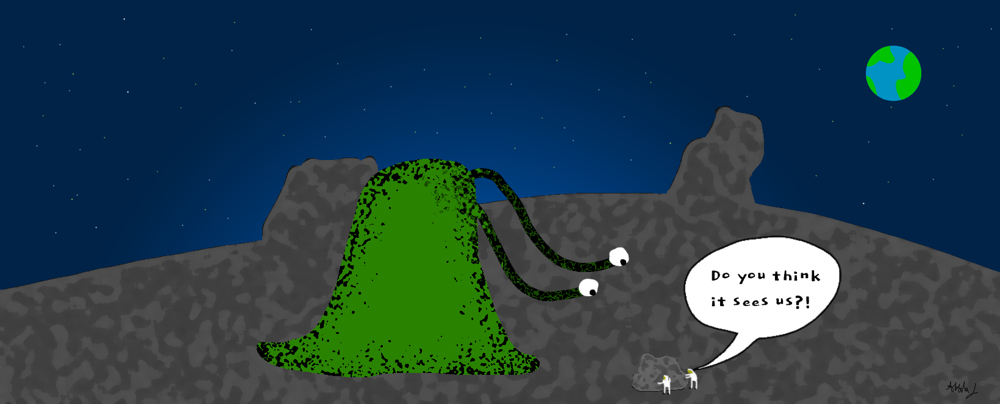

The most obvious pro of broadcasting our cosmic address into the universe is the chance of making contact with aliens. If by some miracle we do come into contact with aliens and find a way to communicate, what are the pros of doing so?
The greatest and most enduring thing we can gain from contact is knowledge. If intelligent aliens are really out there, we could learn about their technology and history and use it to improve life on Earth. They might have invented technology that could end our energy crises or built a spaceship that can travel across space at ridiculous speeds. Contact with an alien species could unlock discoveries we never knew existed. We could even learn about other living beings in the cosmos that these aliens might have already met. The possibilities are endless.
Contact could be a scientific goldmine—a leapfrog technology transfer, skipping millennia of scientific inquiry and reaching a point where we can better our civilization in an unprecedented way. If the aliens we meet have existed a billion years longer, their technology would be a billion years more advanced. If we trade our knowledge with them, we would skip not just millennia, but billions of years of technological development. I couldn't even begin to list what new things we could achieve; I can't even comprehend what lies beyond the limits of human imagination.
While the pros may have convinced you that contacting aliens is a no-brainer, I assure you it is not. We have no idea what aliens are like. Are they friendly? Would they treat us like livestock or as another fellow civilization? We have no idea.
There are too many hypothetical situations to fit into one blog, but one idea I want to address is the fact that we don't know what they'll look like. They might be the size of squirrels traveling in spaceships the size of a desktop computer, or they might be massive green blobs the size of the Burj Khalifa. Think about how diverse life is on Earth already—deep-sea fish to mountain goats. If life can be that varied here, I can't imagine what an alien species might look like.
When I was listing the pros of contact, I mentioned that they could be billions of years more advanced than we are. Taking this at face value, we would expect them to treat us as apprentices, helping us skip years of struggle. This is an overly optimistic point of view. If a civilization that advanced were to stumble upon us, who's to say they wouldn't treat us like ants? What single-celled organisms are to us might be what the human species is to aliens. That's just one idea. What if they're warmongers or galactic barbarians, going around the Milky Way, terrorizing and conquering planets—and we're sending our address right to their doorstep, saying, "Hey, come here!"